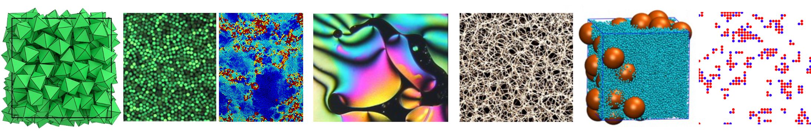

Welcome to the Complex Disordered Matter Course!

Overview
This course introduces your to the theoretical, computational and experimental aspects of the physics of complex disordered matter.
Complex disordered matter is the study of wide range of systems like polymers, colloids, glasses, gels, and emulsions, which lack long-range order but exhibit intricate behaviour. Colloids, suspensions of microscopic particles in a fluid, are useful for studying disordered structures due to their observable dynamics. Similarly, polymer systems can form amorphous solids or glasses when densely packed or cooled, showing solid-like rigidity despite their disordered structure. These materials often undergo phase transitions, such as demixing and crystallisation, and near these transitions, they can display critical phenomena with extensive fluctuations and correlations.
These various systems are examples of soft matter systems. In such systems, the interplay between disorder, softness, and phase behavior leads to rich physical phenomena, particularly near critical points where even small changes in external conditions can trigger large-scale reorganisations and universal behaviour. Glasses, for instance, exhibit slow relaxation and memory effects, while colloidal systems may crystallize, phase separate, or become jammed depending on particle interactions and concentration. Understanding such behaviors involves studying how microscopic interactions and thermal fluctuations influence macroscopic properties, especially in non-equilibrium conditions. Through techniques like scattering, microscopy, rheology, and simulation, one can explore how disordered soft materials respond to stress, age, or undergo transitions—insights that are vital for applications in materials design, biotechnology, and beyond.
This course is organized into three interconnected parts, each offering a distinct perspective on the study of complex disordered matter.
- Part 1: Unifying concepts (Nigel Wilding) introduces the theoretical framework for rationalising complex disordered matter which is grounded in statistical mechanics and thermodynamics. We emphasize the theory of phase transitions, thermal fluctuations, critical phenomena, and stochastic dynamics—providing the essential theoretical tools needed to describe and predict the behavior of soft and disordered systems.
- Part 2: Complex disordered matter (Francesco Turci) explores the phenomenology of key examples of complex disordered soft matter systems, including colloids, polymers, liquid crystals, glasses, gels, and active matter. These systems will be analyzed using the theoretical concepts introduced in Part 1, highlighting how disorder, interactions, and fluctuations shape their macroscopic behavior.
- Part 3: Experimental techniques (Adrian Barnes) focuses on the methods of microscopy, and scattering via x-rays, neutrons and light that are used to study complex disordered matter, offering insight into how their properties are measured and understood in real-world contexts.
In addition to theory and experiment, computer simulation plays a central role in soft matter research. This course includes a substantial coursework component consisting of a computational project. This exercise will allow you to apply state-of-the-art simulation techniques to investigate the complex behavior of disordered systems, bridging theory and observation through hands-on exploration.
Delivery and format
Detailed e-notes (accessible via Blackboard) can be viewed on a variety of devices. Pdf is also available.
We will give ‘traditional’ lectures (Tuesdays, Wednesdays, Fridays) in which we use slides to summarise and explain the lecture content. Questions are welcome (within reason…)
Try to read ahead in the notes, then come to lectures, listen to the explanations and then reread the notes.
Rewriting the notes or slides to express your own thoughts and understanding, or annotating a pdf copy can help wire the material into your own way of thinking.
There are problem classes (Thursdays) where you can try problem sheets and seek help. Lecturers may go over some problems with the class.
The navigation bar on the left will allow you to access the lecture notes and problem sets.
Intended learning outcomes
The course will
- Introduce you to the qualitative features of a range of complex and disordered systems and the experimental techniques used to study them.
- Introduce you to a range of model systems and theoretical techniques used to elucidate the physics of complex disordered matter.
- Provide you with elementary computational tools to model complex disordered systems numerically and predict their properties.
- Allow you to apply your physics background to understand a variety of systems of inter-disciplinary relevance.
- Connect with the most recent advances in the research on complex disordered matter.
Contact details
The course will be taught by
- Prof Nigel B. Wilding (unit director): nigel.wilding@bristol.ac.uk
- Dr Francesco Turci: F.Turci@bristol.ac.uk
- Dr Adrian Barnes: a.c.barnes@bristol.ac.uk
Questions and comments
If you have any questions about the course, please don’t hesitate to contact the relevant lecturer, either by email (see above) or in a problems class.
Finally, this is a new course for 2025/26. If you find any errors or mistakes or something which isn’t clear, please let us know by email, or fill in this anonymous form: